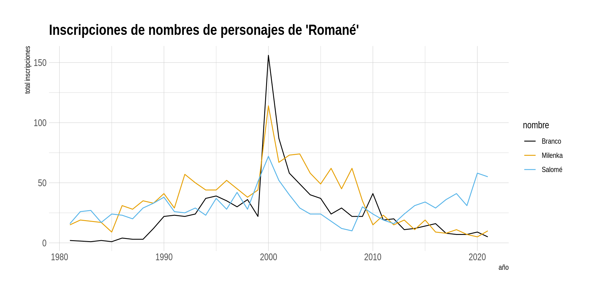
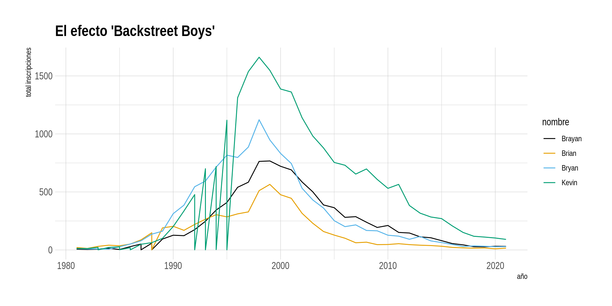

[1] 9

Capacitación en R y herramientas de productividad
Proyecto Estratégico Servicios Compartidos para la Producción Estadística
Introducción y herramientas de exploración de datos
Abril 2021
PE Servicios Compartidos
Esta actividad de capacitación se enmarca en el PE SSCC.
El PE SSCC es uno de los 4 proyectos estratégicos actualmente en funcionamiento en el INE (2018-2022).
Este proyecto busca:
“Proveer a la institución de estándares y desarrollos que permitan automatizar, estandarizar, ordenar, e innovar en la producción estadística, permitiendo reducir tiempos y costos del procesamiento y análisis de las diferentes operaciones estadísticas del INE y minimizando la probabilidad de errores en la publicación de resultados”.
Estructura PE SSCC

Objetivos del aprendizaje
Al finalizar la capacitación se espera que las/os participantes:
- Estén familiarizados con el lenguaje de programación R y cuenten con las habilidades necesarias para profundizar aspectos de su interés en este lenguaje.
- Sean capaces de explorar y transformar objetos en R.
- Manejen herramientas de visualización en R.
- Aprendan buenas prácticas de escritura de código en R.
- Conozcan recomendaciones que les permitan hacer reproducibles y trazables sus rutinas en R.
Organización de la capacitación
- La capacitación de nivel básico se compone de 6 sesiones.
- Las sesiones de realizarán semanalmente, en el día y hora convenidos con el/la capacitador/a.
- Haremos una pausa de 10 minutos durante la sesión.
- Si van surgiendo dudas, pueden consultar durante la clase levantando la mano ✋.
- Si tienen dudas que no apuntan directamente al contenido que se está revisando, podemos quedarnos unos minutos al término de la clase para resolverlas, o bien nos pueden consultar durante la semana.
Contenidos de la capacitación
Sesión 1: Introducción y herramientas de exploración de datos
- ¿Qué es R y por qué usarlo?
- La interfaz de R Studio
- Tipos de datos y operaciones básicas
- Exploración y manipulación básica de un data frameSesión 2: Procesamiento de bases de datos (1)
- Importación de datos desde distintos formatos a R
- Introducción a dplyr
- Manipulación básica de columnas (select(), rename())
- Manipulación básica de filas (arrange(), filter())
- Herramientas básicas de edición de datos (if_else())¿Qué cosas podemos hacer en R?

¿Qué cosas podemos hacer en R?
Boletín índice de Precios al Productor (IPP):

¿Qué cosas podemos hacer en R?
Boletines en Direcciones Regionales:
Documentos metodológicos EPF:
Esta presentación está desarrollada completamente en R 🤯🤯
Interactuando con R
La interfaz de RStudio está distribuida de la siguiente manera

Primeras operaciones en R
R puede ser usado como una calculadora.
Se pueden hacer cosas mucho más interesantes. Para eso es útil asignar valores a objetos
Para esto se utiliza el operador “<-” (W: shortcut “Alt + -” /Mac: ”option + -“)
Primeras operaciones en R
Entonces, podríamos hacer cosas como esta.
Entonces, podemos hacer operaciones sobre los valores almacenados, a través de estos objetos abstractos (a y b).
Tipos de datos en R
Conoceremos algunos de los tipos de datos más utilizados.
Vectores
Es el objeto más básico en R.
Un vector es una forma de almacenar datos que permite contener una serie de valores del mismo tipo.
Veamos algunos ejemplos.
La función “c” (combine) permite unir valores u objetos.
¿cuántos elementos contiene el vector “a”?
¿De qué tipo son los vectores creados?
(con la función length() pueden contar los elementos de un vector)
Tipos de datos en R
Existen 5 tipos de vectores en R:
Podemos consultar cuál es el tipo de vector con class() o typeof()
Que los vectores sean atómicos ⚛️ significa que solo pueden contener un tipo de datos.
Tipos de datos en R
Creando vectores
Otros tipos de datos en R
Existen estructuras de datos más complejas que los vectores.
Data Frames
Es el formato más común al que nos enfrentamos diariamente en hojas de cálculo, o programas como SPSS, Stata, etc.
Podemos entender un data frame como un .pur[conjunto de vectores que tienen la misma longitud] y que conforman una tabla (i.e. toman forma rectangular).
Otros tipos de datos en R
Matrices
Pueden ser entendidas como una extensión de los vectores, pero con dimensión de filas y columnas.
No pueden convivir tipos de datos diferentes dentro de una matriz.
Si se fijan, los números fueron forzados a ser character (“1”).
Otros tipos de datos en R
Listas
Una lista es una estructura que puede contener diferentes tipos de datos, incluso listas.
A veces se les llama vectores genéricos, dado que soportan cualquier tipo de formato.
Esta estructura es más compleja de entender, pero son muy útiles cuando ya se tiene cierto manejo de R.
Otros tipos de datos en R
Factores
Son usados para representar variables categóricas, ordinales o no.
Parecen vectores de caracteres y a veces se comportan de esa manera (porque permiten guardar etiquetas), pero realmente son almacenados como integers (enteros, que son más livianos para almacenar).
En las sesiones posteriores veremos que son muy importantes, sobre todo cuando queremos visualizar nuestros datos 📊📈.
Otros tipos de datos en R
Arrays
Finalmente, este tipo de datos es similar a las matrices, sin embargo, pueden tener más de dos dimensiones.
De hecho, un array de dos dimensiones es lo mismo que una matriz.
No las usaremos para nada en el curso (pero pueden consultar más sobre ellas con help(array) 👀)
Volviendo a los Data Frames
Como mencionamos anteriormente, los data frames son la estructura de datos a la que nos enfrentamos más a menudo.
Para explorar y manipular data frames utilizaremos el paquete guaguas de Riva Quiroga (lingüista chilena).

Instalamos el paquete (nuestro primer paquete 😍)
Volviendo a los Data Frames
Y luego lo cargamos en nuestra sesión (no basta con instalarlo para usarlo).
Es una base de alto interés sociológico. 🧐

Volviendo a los Data Frames

g <- guaguas %>%
filter(nombre %in% c("Milenka", "Branco", "Salomé"), anio > 1980)
df_g <- as.data.frame(g)
df_g %>%
ggplot(aes(anio, n, color = nombre)) +
geom_line() +
scale_color_colorblind() +
labs(x = "año", y = "total inscripciones",
title = "Inscripciones de nombres de personajes de 'Romané'") +
theme_ipsum()Volviendo a los Data Frames

g <- guaguas %>%
filter(nombre %in% c("Kevin", "Bryan", "Brayan", "Brian"), anio > 1980)
df_g <- as.data.frame(g)
df_g %>%
ggplot(aes(anio, n, color = nombre)) +
geom_line() +
scale_color_colorblind() +
labs(x = "año", y = "total inscripciones",
title = "El efecto 'Backstreet Boys'") +
theme_ipsum()Referencias
Nada de esto sería posible sin:
Data wrangling, exploration, and analysis with R, de Jenny Bryan
Xaringan: Presentation Ninja, de Yihui Xie. Para generar esta presentación con la plantilla ninja ⚔
R for Data Science tiene una traducción al español realizada por la comunidad hispana de R:

Capacitación en R y herramientas de productividad
Proyecto Estratégico Servicios Compartidos para la Producción Estadística
Introducción y herramientas de exploración de datos
Abril 2021